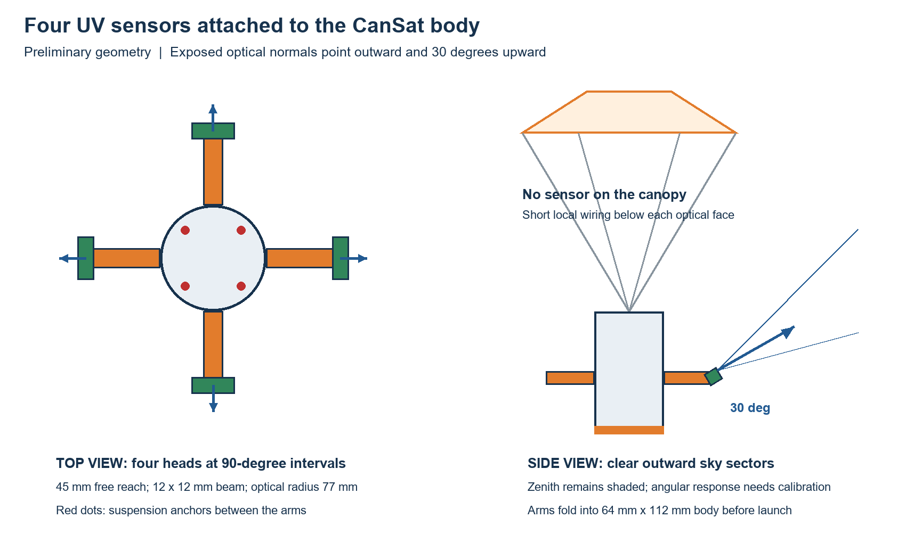
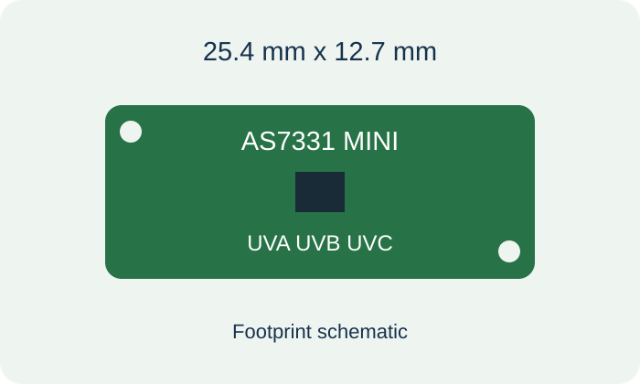
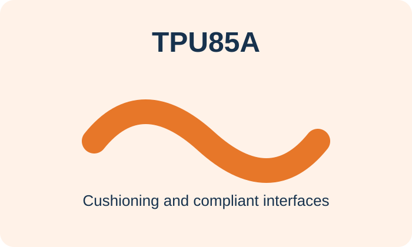

Measure
Measure air temperature and pressure after release and during descent. Transmit both once every second and estimate relative altitude from pressure.
THE PAYLOAD · DESIGN IN DEVELOPMENT
Temperature and pressure describe the atmosphere. UVA and UVB add a radiation profile. Four sensors on the CanSat body look outward and upward during passive parachute descent.
01 / MEASURE, SAMPLE, RECOVER
Our secondary mission compares UVA and UVB with altitude using four sensors attached directly to the CanSat body. Temperature and pressure remain the compulsory primary measurements.
Measure air temperature and pressure after release and during descent. Transmit both once every second and estimate relative altitude from pressure.
Four SparkFun Mini AS7331 boards sit at 90-degree intervals. Their exposed optical faces point outward and 30 degrees upward; separate readings retain the direction and measurement settings.
A bright reusable parachute provides passive recovery. The sensor arms fold inside the launch envelope and need captured roots and positive locks when deployed. No sensor is mounted on the parachute.
The recommended arms extend 45 mm from the body, putting the optical centres 77 mm from its axis. Outward and upward faces provide clear sky sectors when canopy size, separation and tilt stay within the study assumptions. Zenith remains shaded by the canopy. The sensors have broad angular response, so final optics and canopy shadow need calibration; this is not an unobstructed all-sky measurement.
The preliminary study selects a 45 mm free span with a 12 × 12 mm ASA Aero beam, a tapered transition, R5 shoulder blends and a captured root. The complete arm is about 65 mm long including its root. It was the lightest of 210 screened rectangular variants meeting the chosen structural and ray-clearance criteria. A printed pivot guides deployment; the positive root lock must carry flight loads.
Native Onshape geometry checks confirm the static stowed demonstration fits the 66 mm diameter × 115 mm launch cylinder. Analytical screening estimates 0.42 mm tip movement and a reduced-strength ratio of 2.83 for an assumed 100 g opening shock plus 30 m/s flow. These are calculations, not completed FEA or physical tests. SimScale sign-in prevented a solver run; the study supplies material values, loads and restraints for reproduction. Root locks and actual printed material remain unqualified.
We will plot per-head UVA and UVB against relative altitude, retaining raw counts, settings and quality flags. Clouds, solar angle, tilt, canopy shading and saturation may influence the profile. A short flight may show no resolvable change. These readings do not automatically provide a validated UV Index or ozone concentration.
The boards use unique I2C addresses 0x74–0x77 on a short protected 3.3 V body bus. Cables run behind and below each optical face with hinge service loops and strain relief. A body attitude sensor can describe the faces when all arms are locked. The new MicroPython driver and application remain to be implemented.
Read the current PDR and arm engineering study, open the Onshape model, or view the system diagram. The engineering documents require access to the team’s private repository. The CAD demonstrates the concept and is not a qualified flight assembly.

ESP32-S3 is our selected controller family and the SparkFun Mini AS7331 is our selected UV development sensor. Final wiring, calibration and flight integration are still in progress.
SELECTED PLATFORM
The simplified UV mission proposes one flight controller for sensing, logging and telemetry. Python with MicroPython remains our development platform. The final ESP32-S3 board variant depends on packaging and power measurements.
Board specifications ↗
The BMP390 pressure sensor supports altitude and pressure measurements during testing and flight, giving the team data for descent profile analysis.

SELECTED DEVELOPMENT SENSOR
Four SparkFun Mini AS7331 boards provide separate UV channels on a 25.4 mm by 12.7 mm board. UVA and UVB are our science channels. It uses 3.3 V power and I2C; calibration and a MicroPython driver remain to be completed. Sensor documentation

An external LoRa link will carry atmospheric measurements and flight status to the ground. The exact radio variant, frequency and event configuration are still to be confirmed.
Four ASA Aero arms carry the UV heads around the body. The proposed 45 × 12 × 12 mm beams need captured root seats and positive locks. A body IMU records attitude once the arms are locked; the mechanism and sensor optics still need qualification.
The initial custom structure and fixtures will be entirely 3D printed in ASA Aero and TPU85A. A reusable fabric parachute, electronics and wiring complete the flight system.

The X2D printer manufactures the CanSat structure, fixtures, test pieces, and revised CAD iterations. Fast printing helps the team test fit and strength before finalising a design.

The AMS hardware and filament dryers support material handling and conditioning. ASA Aero and soft TPU85A will each use the appropriate drying settings and printer feed path.

ASA Aero is selected for the initial frame, radial arms and UV sensor carriers. Printed thickness, layer orientation and foaming settings will be assessed on the actual parts.

TPU85A is selected for the initial impact pad, sensor isolation and cable strain relief. These flexible parts complement the ASA Aero structure.
The project moves from model to print to electronics integration, with notebook evidence collected along the way.
CAD defines the CanSat body, internal mounts, access points, and recovery interfaces.
Print the initial rigid parts in ASA Aero and the cushioning, compliant interfaces and strain relief in TPU85A, using an appropriate feed path for each material.
Fit the ESP32-S3, primary sensors, four UV heads, radio and storage. Keep head cables below the optics and separate from the recovery load path and record the actual sensor configuration.
Testing, failures, changes, and final decisions are recorded in the engineering notebook.